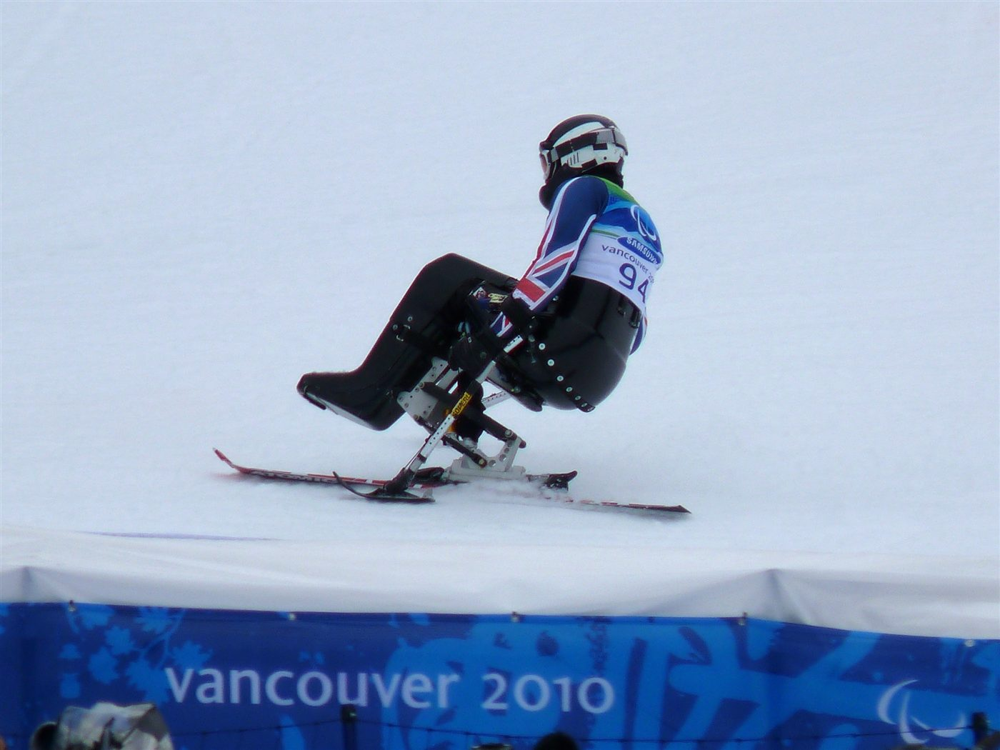
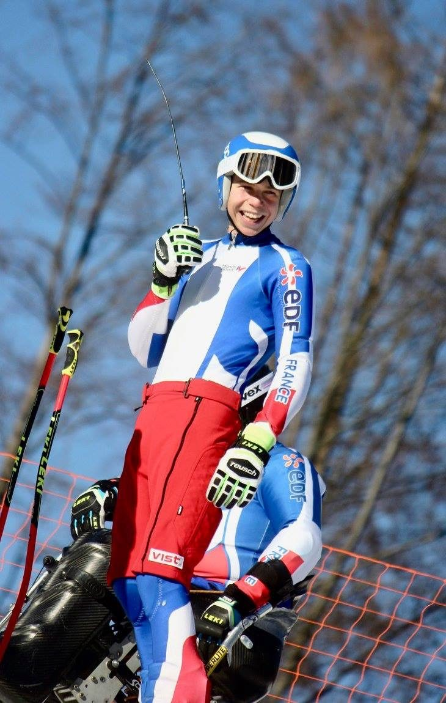
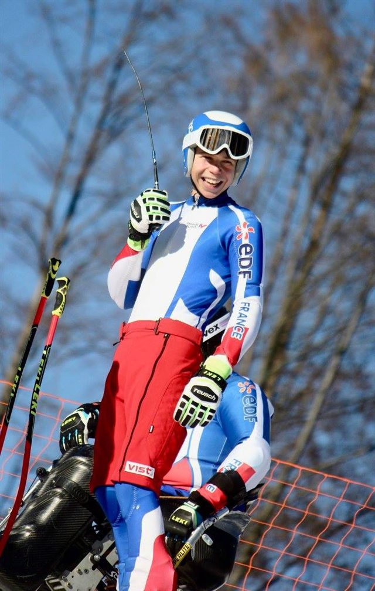
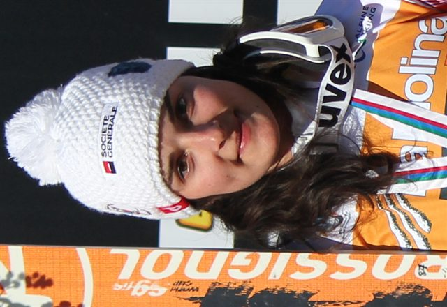
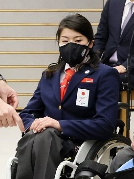
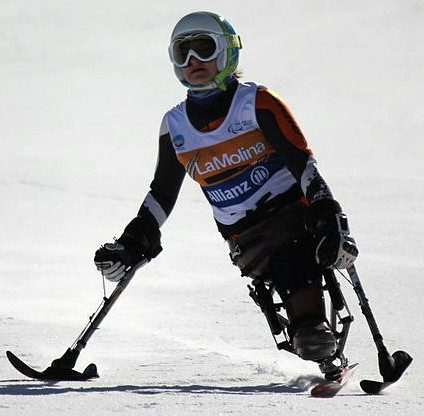
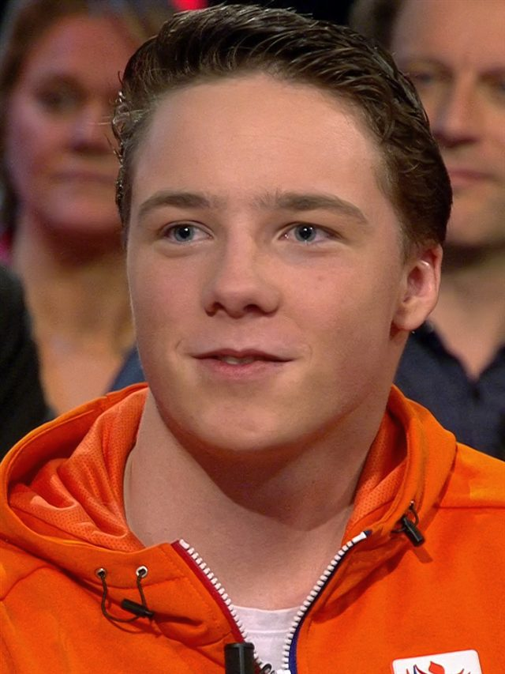

Catégorie debout
Pour les athlètes amputés ou à mobilité réduite, parfois équipés de stabilisateurs.

3
Catégories de handicap
5
Disciplines (comme l'alpin)
100 km/h
Vitesse en descente
Le para ski alpin reprend les cinq disciplines de l'alpin — descente, super-G, slalom géant, slalom et combiné — adaptées à trois catégories d'athlètes : debout, assis (en monoski) et déficients visuels, guidés par un athlète qui les précède à la voix.
Pour rendre la lutte équitable entre des handicaps différents, les temps sont corrigés par un système de facteurs : un coefficient propre à chaque classe est appliqué au chrono réel. Le classement se fait sur ce temps « calculé ».
Les Français Marie Bochet et Arthur Bauchet comptent parmi les plus grands champions de l'histoire de la discipline.

Pour les athlètes amputés ou à mobilité réduite, parfois équipés de stabilisateurs.
La catégorie assis : une coque montée sur un seul ski (monoski), pilotée avec des stabilisateurs.
Les déficients visuels skient derrière un guide voyant qui annonce la trajectoire à la voix.
Un coefficient par classe ajuste le temps réel pour comparer équitablement les handicaps.
Descente, super-G, géant, slalom et combiné : les mêmes formats que le ski alpin valide.
Une ou deux manches selon la discipline : le meilleur temps corrigé l'emporte.
Lieu
Stelvio, Bormio — Valteline
Capacité
≈ 7 000 places en aire d'arrivée
Accès
Navettes JO accessibles depuis Bormio. Tribunes et parcours PMR aménagés.
Billet
À partir de 20 € · 60 € (épreuves de vitesse)
Température
Haute montagne — prévoir -6 °C, jusqu'à 2 000 m d'altitude

 France
France
France
 Japon
Japon
 Allemagne
Allemagne
 Pays-Bas
Pays-Bas